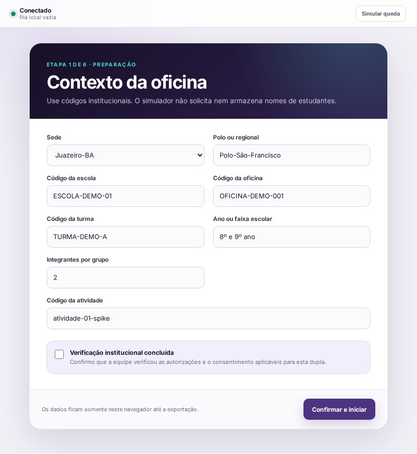
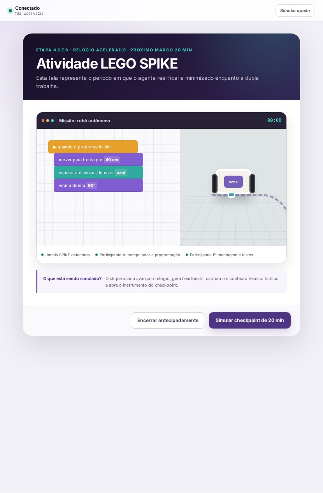
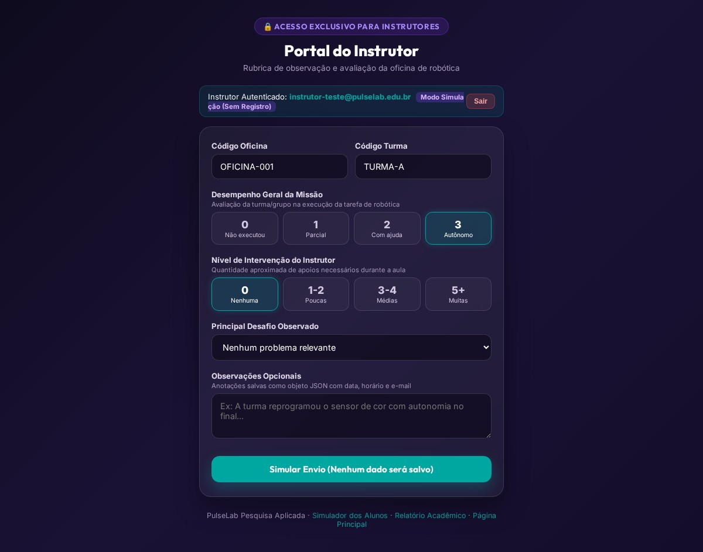

01
Ensino
Robótica integrada à educação de modo lúdico e prático, tornando conceitos complexos mais acessíveis.
O PulseLab integra o projeto Robótica Educativa da UNIVASF como uma camada de pesquisa ética: acompanha a jornada dos estudantes, organiza evidências e ajuda a compreender como a aprendizagem acontece nas oficinas.
A Robótica Educativa da UNIVASF usa tecnologia como ferramenta de transformação social. Nas oficinas, crianças e adolescentes não aprendem apenas a montar robôs: exercitam planejamento, solução de problemas, criatividade e colaboração — competências que seguem com eles para além da sala de aula.
Visitar o site da Robótica Educativa →Robótica integrada à educação de modo lúdico e prático, tornando conceitos complexos mais acessíveis.
Estudo de metodologias ativas e do uso da tecnologia na educação básica e fundamental.
Conhecimento universitário levado a escolas e comunidades para criar pontes e transformar realidades.
Cultura maker em que estudantes criam, testam, erram e evoluem por meio da experimentação.
O percurso institucional é progressivo e inclusivo. Cada etapa amplia a autonomia necessária para o estudante imaginar, construir e testar uma solução.
Robôs, sensores, atuadores e controladores apresentados de forma acessível.
Atividades práticas guiadas por bolsistas da UNIVASF e realizadas em equipe.
Kits robóticos e circuitos conectam teoria, construção e descoberta.
Lógica em blocos e textual para controlar robôs e automatizar tarefas.
Gincanas amistosas estimulam criatividade, colaboração e aplicação do conhecimento.
Enquanto a oficina desenvolve habilidades, o PulseLab registra momentos-chave com instrumentos curtos, transparentes e pseudonimizados.
O instrutor confirma o contexto no computador. Depois, cada participante recebe um convite individual e pode recusar sem prejuízo à atividade.

O agente fica em segundo plano e aparece apenas nos marcos previstos. Em cada checkpoint, o próprio estudante indica de forma ilustrada o que esteve fazendo.

O estudante conclui com perguntas breves. Em seu próprio dispositivo, o instrutor registra uma rubrica independente sobre desempenho e intervenções.

O pacote autônomo vem 100% pré-configurado. Não é necessário digitar tokens, abrir terminais ou conceder privilégios de administrador nas máquinas escolares.
Install-Pulselab.zip no computador.
Install-Pulselab.bat com dois cliques (sem precisar de Administrador).
Instalador standalone .bat pré-configurado e instruções de uso rápido.
Baixar Pacote (.zip) Arquivo seguro · ~35 KB · Sem necessidade de AdminCada componente acolhe a resposta, preserva o contexto e mantém a sessão íntegra mesmo quando a internet da escola oscila.
O relatório descreve o que o aplicativo mede, como cada indicador deve ser analisado e quais limites metodológicos precisam ser respeitados na condução do estudo piloto.